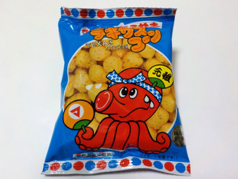

松山製菓のテキサスコーンたこやき味
2022/10/20

原材料のとうもろこしはアメリカまたはブラジルだそうです。テキサスじゃないところが面白いですね。
コーンスナックなのでコーン味が強かったです。明治のカールのような感じかな。それに少したこ焼き風味がありました。
軽いお菓子なので、あっという間になくなりました。私はもっと食べたいって思うんですけど、小さい子はこれで満足するのかな？
岐阜県関市千疋字西柳原2001番地
2022/10/20

原材料のとうもろこしはアメリカまたはブラジルだそうです。テキサスじゃないところが面白いですね。
コーンスナックなのでコーン味が強かったです。明治のカールのような感じかな。それに少したこ焼き風味がありました。
軽いお菓子なので、あっという間になくなりました。私はもっと食べたいって思うんですけど、小さい子はこれで満足するのかな？